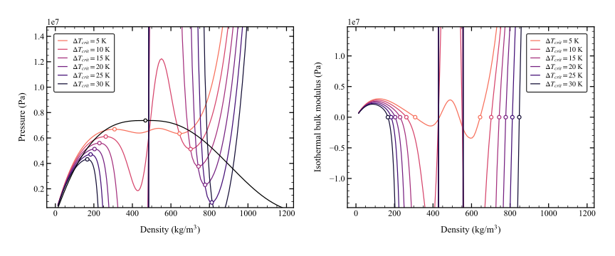
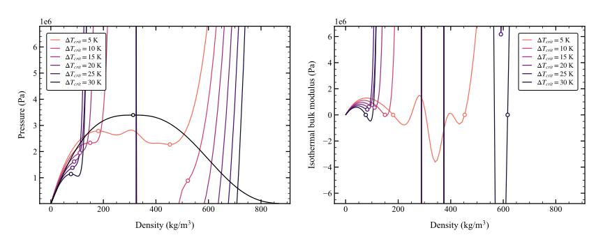

thermopt.properties.fluid_properties module#
- class thermopt.properties.fluid_properties.Fluid(name, backend='HEOS', exceptions=True, identifier=None)[source]#
Bases:
objectRepresents a fluid with various thermodynamic properties computed via CoolProp.
This class provides a convenient interface to CoolProp for various fluid property calculations.
Critical and triple point properties are computed upon initialization and stored internally for convenience.
- Attributes:
- namestr
Name of the fluid.
- backendstr
Backend used for CoolProp, default is ‘HEOS’.
- exceptionsbool
Determines if exceptions should be raised during state calculations. Default is True.
- converged_flagbool
Flag indicating whether properties calculations converged.
- propertiesdict
Dictionary of various fluid properties. Accessible directly as attributes (e.g., fluid.p for pressure).
- critical_pointFluidState
Properties at the fluid’s critical point.
- triple_point_liquidFluidState
Properties at the fluid’s triple point in the liquid state.
- triple_point_vaporFluidState
Properties at the fluid’s triple point in the vapor state.
Methods
get_state(input_type, prop_1, prop_2):
Set the thermodynamic state of the fluid using specified property inputs.
Examples
Calculating properties with Fluid.get_state()
>>> fluid = bpy.Fluid(name="Water", backend="HEOS") >>> state = fluid.get_state(bpy.PT_INPUTS, 101325, 300) >>> print(f"Water density is {state.rho:0.2f} kg/m3 at p={state.p:0.2f} Pa and T={state.T:0.2f} K") Water density is 996.56 kg/m3 at p=101325.00 Pa and T=300.00 K
>>> fluid = bpy.Fluid(name="Air", backend="HEOS") >>> state = fluid.get_state(bpy.PT_INPUTS, 101325, 300) >>> print(f"Air heat capacity ratio is {state.gamma:0.2f} at p={state.p:0.2f} Pa and T={state.T:0.2f} K") Air heat capacity ratio is 1.40 at p=101325.00 Pa and T=300.00 K
Accessing critical point properties:
>>> fluid.critical_point.p # Retrieves critical pressure >>> fluid.critical_point['T'] # Retrieves critical temperature
Accessing triple point properties:
>>> fluid.triple_point_liquid.h # Retrieves liquid enthalpy at the triple point >>> fluid.triple_point_vapor.s # Retrieves vapor entropy at the triple point
- compute_properties_meanline(input_type, prop_1, prop_2)[source]#
Extract fluid properties for meanline model
- get_state(input_type, prop_1, prop_2, generalize_quality=False, supersaturation=False)[source]#
Set the thermodynamic state of the fluid using the CoolProp low level interface.
This method updates the thermodynamic state of the fluid in the CoolProp
abstractstateobject using the given input properties. It then calculates either single-phase or two-phase properties based on the current phase of the fluid.If the calculation of properties fails, converged_flag is set to False, indicating an issue with the property calculation. Otherwise, it’s set to True.
- Parameters:
- input_typeint
The variable pair used to define the thermodynamic state. This should be one of the predefined input pairs in CoolProp, such as
PT_INPUTSfor pressure and temperature.- prop_1float
The first property value corresponding to the input type.
- prop_2float
The second property value corresponding to the input type.
- Returns:
- barotropy.State
A State object containing the fluid properties
- Raises:
- Exception
If throw_exceptions attribute is set to True and an error occurs during property calculation, the original exception is re-raised.
- get_state_blending(prop_1, prop_1_value, prop_2, prop_2_value, rhoT_guess_equilibrium, rhoT_guess_metastable, blending_variable, blending_onset, blending_width, phase_change, supersaturation=True, generalize_quality=True, solver_algorithm='hybr', solver_tolerance=1e-06, solver_max_iterations=100, print_convergence=False)[source]#
Calculate fluid properties by blending equilibrium and metastable properties
Note
For a detailed description of input arguments and calculation methods, see the documentation of the function compute_properties.
- get_state_equilibrium(prop_1, prop_1_value, prop_2, prop_2_value, rhoT_guess=None, supersaturation=True, generalize_quality=True, solver_algorithm='hybr', solver_tolerance=1e-06, solver_max_iterations=100, print_convergence=False)[source]#
Calculate fluid properties according to thermodynamic equilibrium.
Note
For a detailed description of input arguments and calculation methods, see the documentation of the function compute_properties.
- get_state_metastable(prop_1, prop_1_value, prop_2, prop_2_value, rhoT_guess=None, supersaturation=True, generalize_quality=True, solver_algorithm='hybr', solver_tolerance=1e-06, solver_max_iterations=100, print_convergence=False)[source]#
Calculate fluid properties assuming phase metastability
Note
For a detailed description of input arguments and calculation methods, see the documentation of the function compute_properties.
- plot_phase_diagram(x_prop='s', y_prop='T', axes=None, N=100, plot_saturation_line=True, plot_critical_point=True, plot_triple_point_liquid=False, plot_triple_point_vapor=False, plot_spinodal_line=False, spinodal_line_color=array([0.5, 0.5, 0.5]), spinodal_line_width=1.25, spinodal_line_method='bfgs', spinodal_line_use_previous=False, plot_quality_isolines=False, plot_pseudocritical_line=False, quality_levels=array([0.1, 0.2, 0.3, 0.4, 0.5, 0.6, 0.7, 0.8, 0.9, 1.]), quality_labels=False, show_in_legend=False, x_scale='linear', y_scale='linear')[source]#
- class thermopt.properties.fluid_properties.FluidState(properties, fluid_name)[source]#
Bases:
objectAn immutable class representing the thermodynamic state of a fluid.
This class is designed to provide a read-only representation of a fluid’s state, with properties accessible through both attribute-style and dictionary-style access. The state of a fluid is defined at initialization and cannot be altered thereafter, ensuring the integrity of the data.
Instances of this class store fluid properties and the fluid’s name, providing methods to access these properties but not to modify them.
- Parameters:
- propertiesdict
A dictionary where keys are property names (as strings) and values are the corresponding properties of the fluid. This dictionary is converted to an immutable internal representation.
- fluid_namestr
The name of the fluid.
- Attributes:
- propertiesdict
An internal dictionary storing the properties of the fluid state. This attribute is immutable and cannot be modified after the object’s initialization.
- fluid_namestr
The name of the fluid. Immutable after initialization.
Methods
to_dict():
Returns a copy of the fluid properties as a dictionary.
keys():
Returns the keys of the fluid properties.
items():
Returns the items (key-value pairs) of the fluid properties.
- fluid_name#
- thermopt.properties.fluid_properties.compute_property_grid(fluid, input_pair, range_1, range_2, generalize_quality=False, supersaturation=False)[source]#
Compute fluid properties over a specified range and store them in a dictionary.
This function creates a meshgrid of property values based on the specified ranges and input pair, computes the properties of the fluid at each point on the grid, and stores the results in a dictionary where each key corresponds to a fluid property.
- Parameters:
- fluidFluid object
An instance of the Fluid class.
- input_pairtuple
The input pair specifying the property type (e.g., PT_INPUTS for pressure-temperature).
- range1tuple
The range linspace(min, max, n) for the first property of the input pair.
- range2tuple
The range linspace(min, max, n) for the second property of the input pair.
- Returns:
- properties_dictdict
A dictionary where keys are property names and values are 2D numpy arrays of computed properties.
- grid1, grid2numpy.ndarray
The meshgrid arrays for the first and second properties.
- thermopt.properties.fluid_properties.compute_quality_grid(fluid, num_points, quality_levels)[source]#
- thermopt.properties.fluid_properties.compute_saturation_line(fluid, N=100)[source]#
Compute the saturation line for a given fluid.
- Parameters:
- fluidobject
The fluid object containing thermodynamic properties and methods.
- Nint, optional
Number of points to compute along the saturation line. Default is 100.
- Returns:
- saturation_liqdict of lists
Dictionary containing the liquid saturation properties.
- saturation_vapdict of lists
Dictionary containing the vapor saturation properties.
- thermopt.properties.fluid_properties.compute_spinodal_line(fluid, N=50, method='bfgs', use_previous_as_initial_guess=False, supersaturation=False)[source]#
Compute the spinodal line for a given fluid.
- Parameters:
- fluidobject
The fluid object containing thermodynamic properties and methods.
- Nint, optional
Number of points to compute along the spinodal line. Default is 50.
- methodstr, optional
The optimization method to solve the spinodal point problem (‘bfgs’ or ‘slsqp’). Default is ‘bfgs’.
- use_previous_as_initial_guessbool, optional
Whether to use the previous point as the initial guess for the next point. Default is False.
- supersaturationbool, optional
Whether to compute supersaturation properties. Default is False.
- Returns:
- spinodal_liqdict of lists
Dictionary containing the liquid spinodal properties.
- spinodal_vapdict of lists
Dictionary containing the vapor spinodal properties.
- thermopt.properties.fluid_properties.compute_spinodal_point(temperature, fluid, branch, rho_guess=None, N_trial=100, method='bfgs', tolerance=1e-06, supersaturation=False, print_convergence=False)[source]#
Compute the vapor or liquid spinodal point of a fluid at a given temperature.
- Parameters:
- temperaturefloat
Temperature of the fluid (K).
- fluidbarotropy.Fluid
The fluid for which the spinodal point is to be calculated.
- branchstr
Branch of the spinodal line used to determine the density initial guess. Options: ‘liquid’ or ‘vapor’.
- rho_guessfloat, optional
Initial guess for the density. If provided, this value will be used directly. If not provided, the density initial guess will be generated based on a number of trial points.
- N_trialint, optional
Number of trial points to generate the density initial guess. Default is 50.
- methodstr, optional
The optimization method to solve the problem (‘bfgs’ or ‘slsqp’).
- tolerancefloat, optional
Tolerance for the solver termination. Defaults to 1e-6.
- print_convergencebool, optional
If True, displays the convergence progress. Defaults to False.
- Returns:
- barotropy.State
A State object containing the fluid properties
- Raises:
- ValueError
If the input temperature is higher than the critical temperature or lower than the triple temperature.
Notes
When a single-phase fluid undergoes a thermodynamic process and enters the two-phase region it can exist in a single-phase state that is different from the equilibrium two-phase state. Such states are know as metastable states and they are only possible in the thermodynamic region between the saturation lines and the spinodal lines. If the thermodynamic process continues and crosses the spinodal lines metastable states become unstable and the transition to two-distinct phase occurs rapidly. Therefore, the spinodal line represents the locus of points that separates the region where a mixture is thermodynamically unstable and prone to phase separation from the region where metastable states are physically possible.
In mathematical terms, the spinodal line is defined as the loci of thermodynamic states in which the isothermal bulk modulus of the fluid is zero:
\[K_T = \rho \left( \frac{\partial p}{\partial \rho} \right)_T = 0\]More precisely, a vapor spinodal point is the first local maximum of a isotherm line in a pressure-density diagram as the density increases. Conversely, a liquid spinodal point is the first local minimum of a isotherm line in a pressure-density diagram as the density decreases. The spinodal lines and phase envelope of carbon dioxide according to the HEOS developed by [Span and Wagner, 1996] are illustrated in the figure below
Some equations of state are not well-posed and do not satisfy the condition \(K_T=0\) within the two-phase region. This is exemplified by the nitrogen HEOS developed by [Span et al., 2000].
As seen in the figure, this HEOS is not well-posed because there are isotherms that do not have a local minimum/maximum corresponding to a state with zero isothermal bulk modulus. In such cases, this function returns the inflection point of the isotherms (corresponding to the point closest to zero bulk modulus) as the spinodal point.
- thermopt.properties.fluid_properties.compute_spinodal_point_general(prop_type, prop_value, fluid, branch, rho_guess=None, N_trial=100, method='bfgs', tolerance=1e-06, print_convergence=False, supersaturation=False)[source]#
General function to compute the spinodal point for a given property name and value.
This function uses the underlying compute_spinodal_point function and iterates on temperature until the specified property at the spinodal point matches the given value.
- Parameters:
- prop_typestr
The type of property to match (e.g., ‘rho’, ‘p’).
- prop_valuefloat
The value of the property to match at the spinodal point.
- fluidobject
The fluid object containing thermodynamic properties and methods.
- branchstr
The branch of the spinodal line. Options: ‘liquid’ or ‘vapor’.
- rho_guessfloat, optional
Initial guess for the density. If provided, this value will be used directly. If not provided, the density initial guess will be generated based on a number of trial points.
- N_trialint, optional
Number of trial points to generate the density initial guess. Default is 100.
- methodstr, optional
The optimization method to solve the problem (‘bfgs’ or ‘slsqp’). Default is ‘bfgs’.
- tolerancefloat, optional
Tolerance for the solver termination. Defaults to 1e-6.
- print_convergencebool, optional
If True, displays the convergence progress. Defaults to False.
- Returns:
- barotropy.State
A State object containing the fluid properties
- Raises:
- ValueError
If the scalar root to determine the spinodal point fails to converge.
Notes
This function uses a root-finding algorithm to iterate on temperature until the property specified by prop_type at the spinodal point matches prop_value. The compute_spinodal_point function is called iteratively to evaluate the spinodal properties at different temperatures.
Examples
>>> state = compute_spinodal_point_general( ... prop_type='density', ... prop_value=500, ... T_guess=300, ... fluid=my_fluid, ... branch='liquid', ... rho_guess=10, ... N_trial=150, ... method='slsqp', ... tolerance=1e-7, ... print_convergence=True, ... )
- thermopt.properties.fluid_properties.states_to_dict(states)[source]#
Convert a list of state objects into a dictionary.
Each key is a field name of the state objects, and each value is a Numpy array of all the values for that field.
- Parameters:
- states_gridlist of FluidState
A 1D grid where each element is a state object with the same keys.
- Returns:
- dict
A dictionary where keys are field names and values are 1D arrays of field values.
- thermopt.properties.fluid_properties.states_to_dict_2d(states)[source]#
Convert a 2D list (grid) of state objects into a dictionary.
Each key is a field name of the state objects, and each value is a 2D Numpy array of all the values for that field.
- Parameters:
- states_gridlist of lists of FluidState
A 2D grid where each element is a state object with the same keys.
- Returns:
- dict
A dictionary where keys are field names and values are 2D arrays of field values.